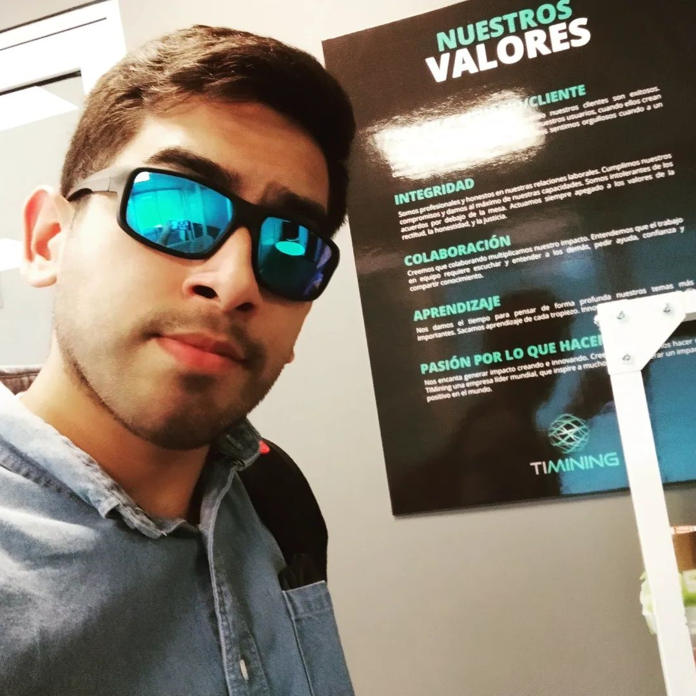

MSc. (c) in Mining Engineering UC | Mine Planning & Operations | Advance Analytics | Data Science
I am a Master's student specializing in data science with a strong focus on the mining industry. My work involves machine learning, risk-based inspections, and the application of AI to improve mining processes.
This folder showcases my main projects as Data Engineer and various academic assignments I've completed.
This folder showcases my main projects as Data Scientist and various academic assignments I've completed.
This folder showcases my main projects as Data Analyst and various academic assignments I've completed.
If you would like to collaborate or learn more about my work, feel free to reach out via email or connect with me on social media.
Email: fabriziogarciam.96@gmail.com